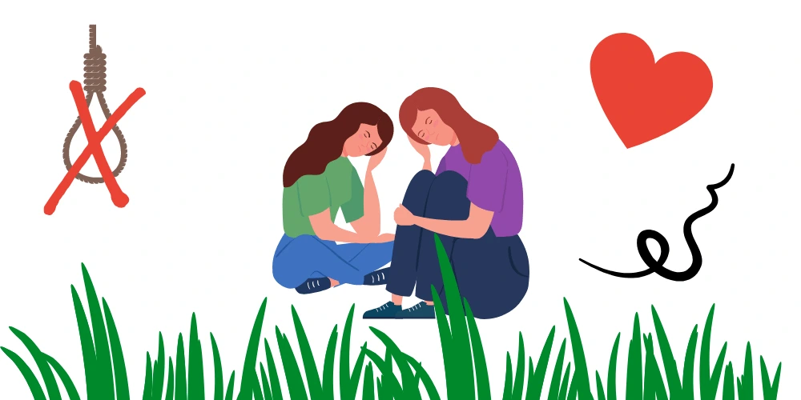
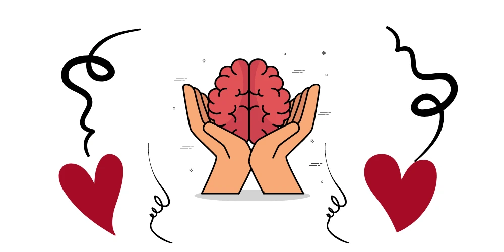

Having been prohibited for many years, mental health is now being broadly discussed. During some times of life, many face psychological problems related to anxiety, addictions, insecurities, fears, worry and etc. However, living with mental illness is not really easy. It’s an eye to eye problem without a clear solution. Getting treatments like medication and psychotherapy are incredibly helpful. But, sometimes people who experience mental health conditions need to do more day-in and day-out to feel good. Read more to learn about mental illness, strategies on how to cope with mental illness and how you can self treat a mental illness.
Mental illness is nothing to be ashamed of.
Likewise, it is a medical problem, just like heart disease or diabetes.

What is Mental Illness?
Mental illnesses are health conditions that involve changes in emotion, thinking or behaviour. That is to say, mental illnesses are related to distress and problems that happen in day to day activities. These are really common and easily treatable. Most importantly, the huge majority of individuals with mental illness continue to function in their daily lives.
Mental illness is a name for an illness that may have symptoms, which affects a person’s thinking, mood or behaviour. That is to say, mental illness can make it difficult for someone to cope with work, relationships and other requests. The relationship between stress and mental illness is compound. But it is known that stress can make a situation of mental illness really bad. Most people can manage their mental illness with medication, counselling or sometimes both.
Certainly, mental health is the footage for emotions, communication, learning and self-esteem. Mental health is also key to relationships, personal and emotional well-being and donating to the community or society.
Types of Mental Health Issues and Illness to Cope with
Anxiety disorders –
Anxiety disorders are a small group of mental health disorders. It includes normal anxiety disorders, social phobias, specific phobias, panic disorders, and post-traumatic stress disorder.
Bipolar affective disorder –
Bipolar affective disorder is a type of mood disorder, earlier referred to as a manic depression. A person with bipolar disorder experiences events of mania and depression.
Depression –
Depression is a mood disorder characterised by moodiness, loss of interest and enjoyment, and reduced energy. In short, it is not just feeling sad or something.
Dissociation and dissociative disorders –
Dissociation is a mental procedure where a person disconnects from their thoughts, feelings or memories.
Eating disorders –
Eating disorders include anorexia, bulimia nervosa and other binge eating disorders.
Obsessive-compulsive disorder –
Obsessive-compulsive disorder or OCD is an anxiety disorder. On the other hand, obsessions are repeated thoughts, images or impulses that are intrusive and unwanted.
Paranoia –
Paranoia is the irrational and tenacious feeling that people are ‘out to get you’. Paranoia may be a symptom of conditions that include paranoid personality disorder, delusional disorder and schizophrenia.
Post-traumatic stress disorder –
PTSD is a mental health condition that can develop as a response to people who have experienced any bad event in their lives.
Psychosis –
People affected by psychosis can experience not only a misconception, hallucinations but also confused thinking. Psychosis can happen in a number of mental illnesses, including drug-induced psychosis, schizophrenia and mood disorders.
Schizophrenia –
Schizophrenia is a complex psychotic disorder characterised by confusion about thinking and emotions, and a twisted perception of reality. Symptoms of schizophrenia differ widely. But it may include hallucinations, misconception, thought disorder, lack of motivation and memory.
These are a few of the most common mental health issues and mental illnesses people tend to have nowadays.
Signs of Mental Health Illness
Remember that you are not your diagnosis. You are just a person who happens to be dealing with a mental illness
Most importantly, You are a strong person, who’s on his journey to cope with and self treat a mental illness
Mental health involves effective performance in daily activities resulting in:
- Productive activities
- Healthy relationships
- Ability to adjust to change and cope with adversity
Mental illness mentions collectively to all diagnosable mental disorders
- Significant changes in thinking, emotion and behaviour
- Distress and problems functioning in social, work or family activities
It is too easy to go about our busy lives and not notice warning signs of physical or mental illness. On the other hand, our body has built-in warning systems. This alerts us to the warning signs that we need to pay attention to. By paying attention, we can learn how to cope and further how to self treat a mental illness.
Warning signs of mental illness to cope with – Especially when you have two or more of these symptoms.
- Long-lasting sadness or grouchiness
- Extremely high and low moodiness
- Fear, worry or anxiety
- Social anxiety
- Changes in eating or sleeping habits
- Problems with alcohol or drugs
- Delusions, paranoia or hallucinations
- Excessive anger, malevolence or violence
- Changes in sex
- Random suicidal thinking
There are many self-report mental health screening tools that you may consider. You can complete it and score to see if you might be experiencing clinical depression. Certainly, this might not only help you to cope with mental illness but also will give you an idea of how to self treat a mental illness.
Warning signs of mental illness to cope with – Especially when you have two or more of these symptoms.
- Long-lasting sadness or grouchiness
- Extremely high and low moodiness
- Fear, worry or anxiety
- Social anxiety
- Changes in eating or sleeping habits
- Problems with alcohol or drugs
- Delusions, paranoia or hallucinations
- Excessive anger, malevolence or violence
- Changes in sex
- Random suicidal thinking
There are many self-report mental health screening tools that you may consider. You can complete it and score to see if you might be experiencing clinical depression. Certainly, this might not only help you to cope with mental illness but also will give you an idea of how to self treat a mental illness.
How to Cope with Mental Illness?
The diagnosis of a mental disorder is not always the same as a need for treatment. The need for treatment takes into thought based on:
- how bad the symptoms are
- how much symptoms cause distress and affect daily activities
- the risks and benefits of available treatments and other parts.
Primary care clinicians, psychiatrists and other mental health clinicians always help us
- to understand the mental illnesses
- to learn what we can do to control the mental illnesses
- cope with the symptoms in order to improve health, wellness and function.
Pay attention to warning signs
Work with your doctor or therapist to learn what might cause your symptoms. For example, they can give you information or may recommend classes, books or websites. Don’t forget to include your family, too. Certainly, this can help the people who care about you understand what you’re going through and learn how they can help you. Moreover, contact your doctor or therapist if you notice any changes in your symptoms or how you feel. In addition, consider involving your family members or your friends to watch for warning signs.
Value yourself
Always treat yourself with kindness and respect, and avoid self-criticism. Most importantly, make time for your hobbies and favourite projects, or stretch your horizons. Do a daily crossword puzzle, plant a garden, take dance lessons or try learning a new language.
Surround yourself with good people
Generally, people with strong family or social connections are healthier than those who lack a support network. Make plans with your family members and friends, or seek out activities where you can meet new people, such as a club, class or support group.
Quiet your mind
To quiet your mind, firstly, try meditating, Mindfulness or prayer. As a result, relaxing, exercising and praying can improve your state of mind and outlook on life. In fact, researches show that meditation may help you feel calm and increase the effects of therapy. However, to get connected, see spiritual resources on personal well-being.
Stay connected with friends and family
Always try to participate in social activities, and get together with family or friends regularly. Ask for help when you need it, and be honest with your loved ones about how you’re doing.
Get routine medical care
Don’t avoid checkups or skip visits to your primary care provider, especially if you aren’t feeling well.
- You may have a new health problem that needs to be treated
- You may be experiencing side effects of medication.
Keep a Journal
Keep a journal or jot down brief thoughts or record symptoms on a smartphone app. For instance, keeping track of your personal life and sharing information with your therapist can help you on how to cope with your illness. In addition, it’s also a healthy way to explore and express pain, anger, fear and all your other emotions.
Set realistic goals
Firstly, decide what you want to achieve academically, professionally and personally. Secondly, write down the steps you need to realize your goals. Always aim high, but be realistic and don’t over-schedule. You’ll enjoy a huge sense of accomplishment and self-worth as you progress toward your goal. For example, wellness coaching can help you develop goals and stay on track.
Learn how to deal with stress
Whether you like it or not, stress is a part of life. Don’t forget to practice good coping skills. For example, try One-Minute Stress Strategies, do Tai Chi, exercise, take a walk, play with your pet. Also, never forget to smile and see the humour in life. That is to say, researches show that laughter can boost your immune system, ease pain, and reduce stress.
Avoid alcohol and other drugs
Keep alcohol use to a minimum and avoid other drugs as much as possible. Most of the time people use alcohol and other drugs to “self-medicate” but in reality, alcohol and other drugs only cause more problems.
Break up the monotony
Our daily routines make us more structured and enhance our feelings of safety. But a little change of this pace can cheer up a boring schedule. For example, alter your jogging route, plan a road trip with your friends, take a walk in a different park, or try a new restaurant.
Take good care of yourself
Enough sleep, healthy eating and regular physical activity are important. Therefore, try to maintain a regular schedule as much as you can. Talk to your therapist if you have trouble sleeping, eating or physical activities.
Get help when you need it
Seeking help when you need it is a sign of strength — not a weakness. However, it is important to remember that getting treatment is effective. People who get necessary care can recover from mental illness and addiction and lead full, rewarding lives.
Join a support group
Connecting and sharing with others facing similar challenges may help you cope with mental illness and self treat a mental illness. In other words, support groups for mental illness are available in many communities and even online.
Self-care and Mental health
What is self-care?
Self-care is providing enough attention to your own psychological and emotional wellbeing. This may be a bit of an unclear description, the truth is, self-care doesn’t look the same for any two people. When they try to cope with mental illness, the way might be slightly different and so does when they self treat a mental illness.
For outgoing people, being around other people in a social setting may meet their emotional needs. However, backward people may prefer an evening watching a movie with a close friend or significant other to get their social needs met. Some vow by warm bubble baths, and quiet music, while others want to hit the gym, drink a coffee, or even take some time to clean their living space thoroughly.
There are practically many endless ways to practice self-care. Likewise, it all boils down to doing things that you enjoy or require.
Many people tend to think of pampering themselves or spoiling in guilty pleasures as self-care. But, it never just ends there. Self-care also encloses all the things you need to do to remain healthy, and feel as mentally well as possible. Self-care plays a huge role in mental illness when you are trying to cope with it.
This means that getting a massage is self-care, but so is cleaning your home to reduce some stress. Enjoying ice cream on a warm day is self-care. But so does attending a therapy session to address your emotional needs, trauma, or mental illnesses.
What is mental health?
Mental health is our emotional, psychological, and social well-being. It influences how we think, feel, and act. It also helps decide how we handle stress, relate to others, and make choices. Mental health is very important at every stage of life, from childhood and adolescence through adulthood.
Over the course of your life, if you experience mental health problems, your thinking, mood, and behaviour could be affected very easily. However, many components contribute to mental health problems, including:
- Biological factors, such as genes or brain chemistry
- Life experiences, such as trauma or abuse
- Family history of mental health problems
What do studies say about self-care and mental health?
Self-care relies on expanded self-awareness, which can benefit people who are living with a mental illness. Practising self-awareness can help you to recognize patterns in your emotions, including events or situations that can cause worsened symptoms. It can also help you to recognize what activities are compulsory for your well-being. Most importantly, self-care can help you with how to cope with mental illness.
But that doesn’t mean that self-care is the heal for mental or physical illnesses.
Many people find it difficult to provide self-care when it is most required. People are quick to recurrent the benefits of self-care for depression, anxiety, and other mental illnesses. But fails to recognize the amount of work self-care can need, nor the struggles of people who are trying to provide self-care while also living with the symptoms.
Practice self-care to cope with mental illness
Your personal label of self-care will depend on what works best for you, what you enjoy, your energy levels, personality, and other factors. However, here are some ideas to help you get started on giving yourself the attention you deserve.
- Take a quick mental checkup of your body. This might help you a lot to cope with your mental illness. While taking a breath deeply, scan your body, releasing tension as you find it. Check your position and adjust as necessary. It only takes a few seconds to do but can provide change immediately.
- Take care of your health needs. Schedule appointments with your doctor for regular checkups, stay on top of your medications or any other care you need to maintain your physical health.
- Always practice healthy sleep habits and listen to your body’s needs. For example going to bed at an earlier time, making sure that your bedroom is comfortable and quiet before bed can help you enjoy a more restful sleep.
- Make sure to practice healthy eating habits. Eating regularly can help you to feel much better. Eating healthily is obviously a great type of self-care, but so is simply making sure you eat something each day.
- Set aside time to talk with one of your family members or a trusted friend. Read, reflect, journal, or otherwise bemuse with your thoughts. Self-awareness is an important part of self-care, so don’t avoid your emotions!
Note these risk factors to cope with your mental illness
Mental illness is common nowadays. About 1/5 of adults have a mental illness in any given year. Mental illness can happen at any age, from childhood through later adult years, but most cases begin earlier in life.
The effects of mental illness can be temporary or sometimes long-lasting. You also can have more than one mental health disorder at the same time. For example, you may have anxiety and a substance use disorder.
There are some factors that may increase your risk of developing a mental illness, such as:
- A history of mental illness in a blood relative – a parent or sibling
- Stressful life situations – financial problems, a loved one’s death or a divorce
- An ongoing medical condition – diabetes
- Brain damage as a result of a serious injury – a violent blow to the head
- Traumatic experiences – military combat or assault
- Use of alcohol or any other drug
- Childhood history of abuse or neglect
- Few friends or few healthy relationships
- Previous mental illness

What if you have suicidal thoughts? What if you can’t cope with your mental illness?
Suicidal thoughts and behaviour are common when it comes to some mental illnesses. sometimes it is too hard to cope with your mental illness. Sometimes you don’t know how to self treat a mental illness. If you think you may hurt yourself or attempt suicide, get help straight away:
- Call your local emergency number right away.
- Call your mental health specialist immediately.
- Talk with a family member or an adult.
- Reach out to a close friend or loved one.
- Contact a spiritual leader or someone else in the community.
Suicidal thinking doesn’t get better on its own — so get help as soon as possible.
Where do you go from here?
If you’re having a really hard time coping with your mental illness, you may want to consider outside help. You might even get some tips on how to self treat a mental illness. Here are some places for you to look:
- A trusted friend or a family member
- Your family doctor or your nurse practitioner
- A mental health organization
- An online support group
- A crisis line
- A private counsellor, therapist, or a psychiatrist
- Your local mental health clinic or centre
We are here to help you
Cope with your mental illness today
Are you struggling hard with a mental health condition, such as anxiety, depression, or PTSD? However, you don’t have to handle your pain alone now. Epsychiatry is staffed by compassionate professionals. We are dedicated to helping you on how to cope with your mental illness and discover how you can enjoy life again.
Schedule an appointment or learn more when you contact our office. Or get in touch with one of our members of our team.